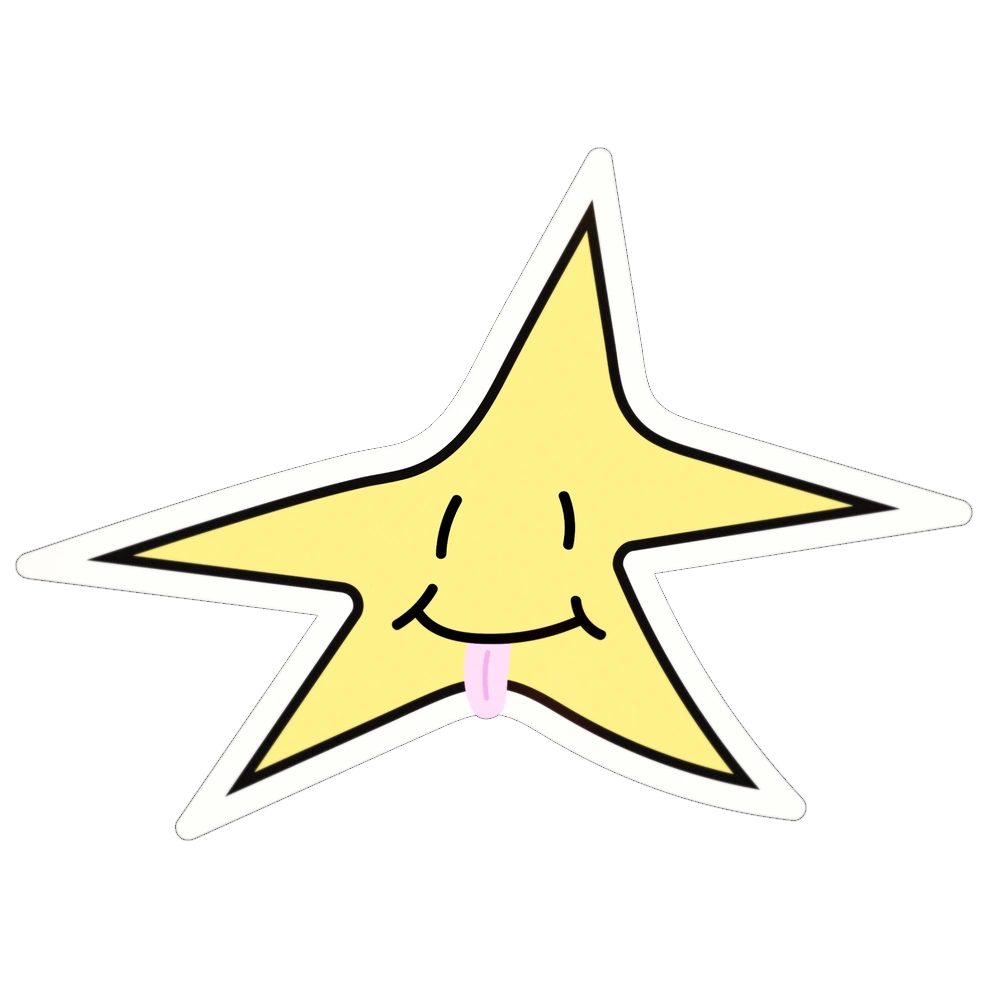
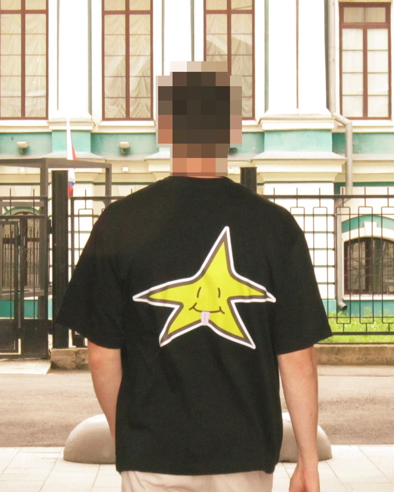
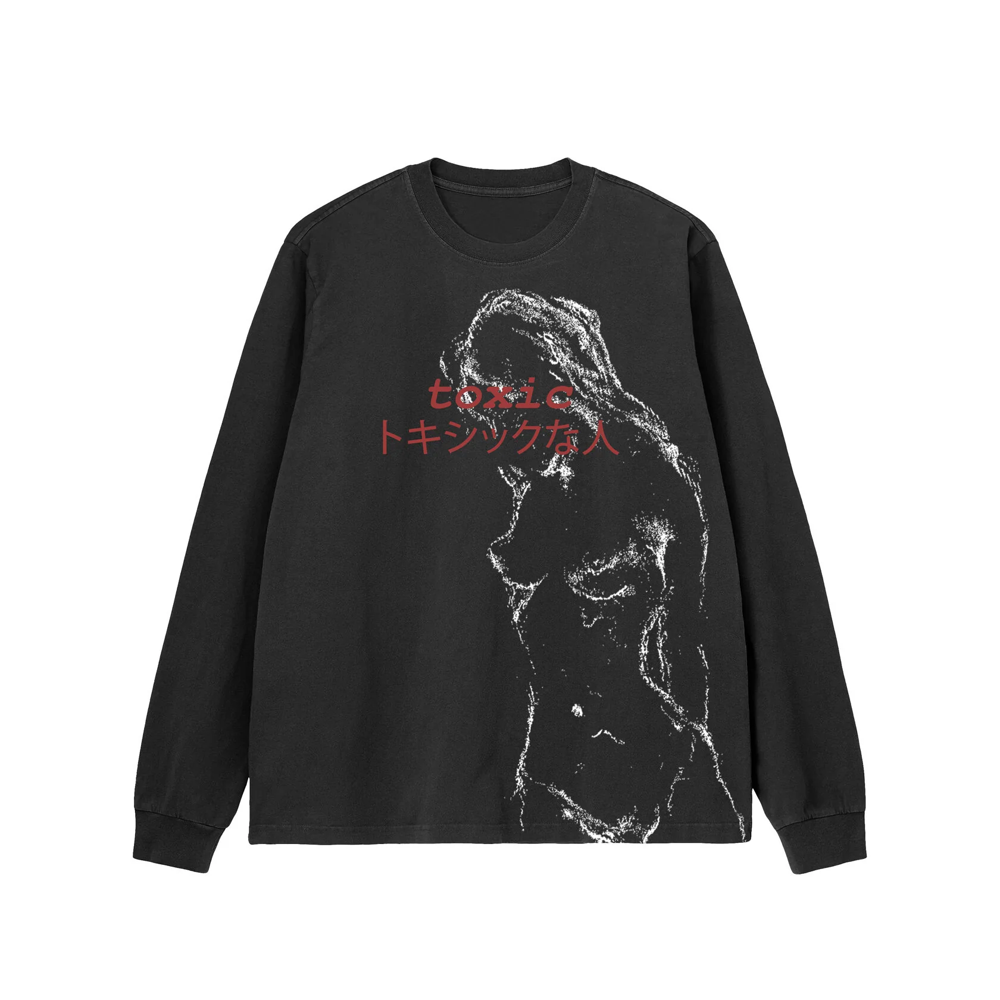

BRANDING
Айдентика бренда
Айдентика, арт-дирекшн, упаковка, одежда и мерч. От идеи до цельной визуальной системы.

Первая капсула
Лонгслив и oversize-футболка. Я разработал графику, собрал прототипы в Marvelous Designer и запустил первый дроп без рекламного бюджета.


Результаты проектов NIKIFILINI, OTHERS / SOMBRA и Charlie’s из моего опыта.
к конверсии OTHERS / SOMBRA
после внедрения AI-фотосессий
к скорости добавления коллекций
в NIKIFILINI
к посещаемости Charlie’s
после запуска фирменного лукбука
Мне интересно, что делает бренд собой. Нахожу этот характер и превращаю его в айдентику, продукт и цифровой опыт.
За 5 лет работал с одеждой, e-commerce и сервисными брендами. Разрабатываю визуальные системы, создаю контент с помощью AI и помогаю командам встроить новые инструменты в работу.
Давайте знакомитьсяАйдентика, арт-дирекшн, упаковка, одежда и мерч. От идеи до цельной визуальной системы.
UI/UX, e-commerce и веб-дизайн. Понятная структура, выразительная подача и внимание к деталям.
AI-фотосессии, лукбуки и контент для маркетплейсов. Внедрение инструментов и обучение команд.
От первых визуальных коммуникаций — до брендинга с нуля и внедрения AI в команды.
Ищу команду и проекты, где ценят
сильные идеи и смелый дизайн.